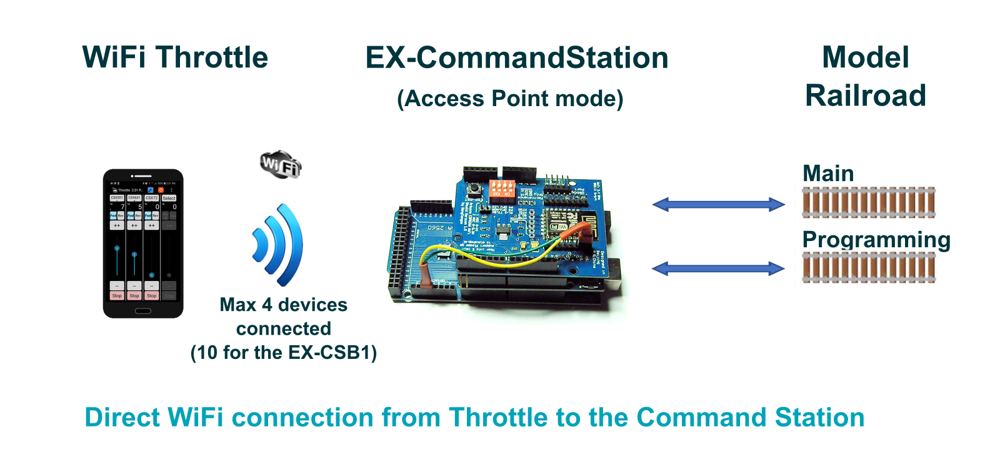
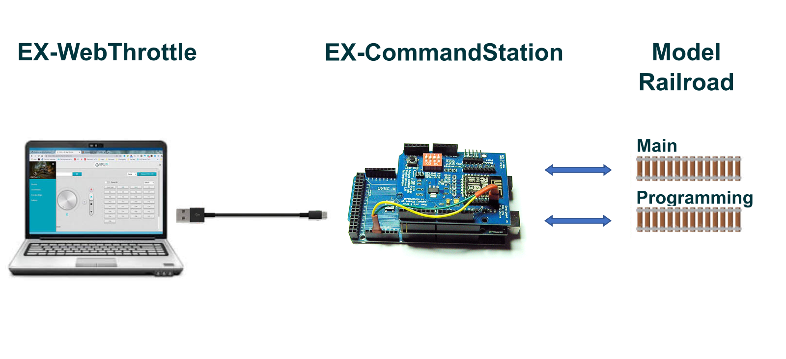
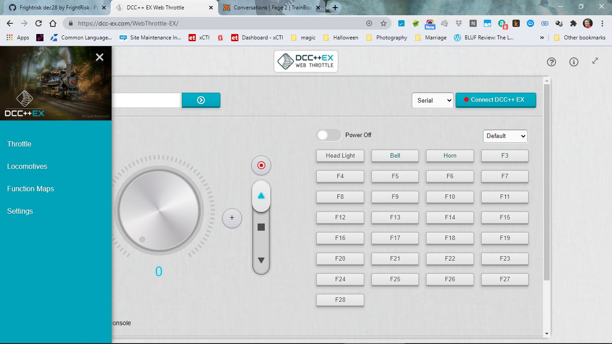

Choosing a Throttle (Controller)


This page is specifically intended for a Conductor or Tinkerer who has either:
Purchased a ready-to-run (RTR) EX‑CommandStation / Booster One Express, or
Assembled just the recommended do-it-yourself (DIY) hardware (including WiFi).
If you are a Tinkerer or Engineer or have installed some of the additional, or different, hardware from that recommended for a Conductor then we suggest that you look at the Choosing a Throttle (Controller) - Advanced page for the full list of Throttle (Controller) options.
What You Need & Why You Need It
You need just two things that work together to operate your model railroad:
The EX‑CommandStation (aka the Command Station or ‘CS’)
A Controller (aka Front-end, Cab, or Throttle)
The EX-CommandStation
The EX‑CommandStation is explained in detail in the EX-CommandStation (Ready-to-Run or Do-It-Yourself) pages. It is either an EX‑CommandStation / Booster One Express or an Arduino microcontroller with a motor driver and a WiFi shield.
The Command Station accepts instructions from a controller and generates packets that are transmitted to your track and subsequently your trains.
The Throttle (Controller)
Since the EX‑CommandStation simply accepts commands to turn into signals for your layout, you need something that sends those commands to run your trains - a controller. (It isn’t very practical to type something like <t 1 3 75 1> into a serial monitor to tell your train to move each time! 😉)
A controller can be a hardware device like a handheld throttle (also called a Controller or Cab), an App that runs on your phone, a Web Page, or front-end software like JMRI or Rocrail that runs on a computer or Raspberry Pi.
Throttle (Controller) Options
Here is a small subset of the throttles you can use with the EX‑CommandStation. These options are simple and inexpensive (i.e. free) and are suitable for initial testing if you have installed just the recommended hardware (including WiFi). Namely WiFi (using a smart phone) and Direct Connection.
For further throttle and connection options, refer to Choosing a Throttle (Controller) - Advanced.
Connecting via WiFi
For those who just want to run trains and not use any other control software, the simplest method to get going is to download a compatible phone or tablet app and connect directly from your wireless device to the EX‑CommandStation.
Note you need a Command Station with a WiFi Shield.
Here is an image that represents a direct connection.
{kind=link}

WiFi Throttle Direct to Command Station
There are number of excellent phone apps and physical hardware devices that can be used as a WiFi Throttle (Controller) for the EX‑CommandStation. On this page we are only going to cover two.
Warning
This warning is only relevant to the DIY EX-CommandStation.
It is not relevant to the EX‑CSB1.
Be aware that the Espressif firmware shipped with Duinopeak ESP8266 WiFi Expansion and ESP-01 or ESP-01S devices probably will NOT work with EX‑CommandStation out of the box.
The recommended Makerfabs ESP8266 WiFi Shield is now shipping with the correct firmware version and will work with EX‑CommandStation without modification.
If you see a WiFi network Name (SSID) of DCCEX-SAYS-BROKEN-FIRMWARE then you have one of the problematic AT firmware versions. This can be corrected, but is probably beyond Conductor level and requires additional hardware.
See ESP8266 (WiFi Boards) - AT Version Issues and Solutions for details on how to check the version and how to correct it if needed.
Compatible WiFi Throttles
Important
A limitation of Access Point (AP) Mode, which is recommended in the EX-CommandStation (Ready-to-Run or Do-It-Yourself) pages, is that the wiThrottle Server of the EX‑CommandStation cannot be ‘discovered’. Engine Driver can usually guess it, but wiThrottle can’t. In wiThrottle you will need to type in the address.
For more information on any of these throttles, you can click on their links below or see our Throttles Page Index.
We will cover the use of just two here. These two are a) free, or have a free version, b) are reasonably easy to get to work, and c) most people will already have a suitable phone to use:
If you have an Android phone use Engine Driver.
If you have an Apple (iOS) phone use WiThrottle.
Engine Driver (Android | WiThrottle | WiFi)
Engine Driver is a throttle app for your phone that can control multiple locos and your turnouts/points. It uses an interface called “wiThrottle Protocol” (for WiFi Throttle). Any wiThrottle Protocol compatible throttle will work with the EX‑CommandStation. There are two ways to connect Engine Driver to your EX‑CommandStation:
The first method is to connect directly to the Command Station via WiFi. You will need either a EX‑CommandStation / Booster One Express with its integrated WiFI, or a WiFi board connected to your DIY Command Station (see WiFi Setup WiFi Setup).
The second method is to use JMRI and connect Engine Driver (ED) to the computer running JMRI. (We won’t cover that option here.)
Basic use of Engine Driver will be covered on the following Test Your Setup page. (See Engine Driver Page for additional details on how to install and run Engine Driver.)
WiThrottle Lite (iOS | WiThrottle | WiFi)
wiThrottle is an app for iPhones and iPads. It can connect directly to the EX‑CommandStation like Engine Driver does, or connect to JMRI on a computer and then have JMRI connect to the Command Station via a USB cable.
The “Lite” version of wiThrottle is free and is more than adequate for some initial testing and base running of locos. However the Lite version does not have a Track Power button/command so it is important to configure your EX‑CommandStation to power on at startup.
Basic use of wiThrottle will be covered on the following Test Your Setup page. (See WiThrottle Page for details on how to install and run wiThrottle.)
Connecting via USB
Here are the connections, just a computer running a chromium-based browser (Chrome, Edge, Safari and others) a USB cable, and your EX‑CommandStation.
{kind=link}

EX-WebThrottle
Compatible USB Throttles
There is currently only one USB compatible Throttle (Controller) for the EX‑CommandStation that we are aware of.
Our EX-WebThrottle (DCC-EX Native Commands | USB/Serial)
The simplest throttle option is to just use a throttle directly connected to the Command Station. The simplest of these is arguably EX‑WebThrottle, connected via a USB cable from your computer and web browser directly to the Command Station. You have control of multiple locomotives and can operate turnouts/points. There is a way to replace the USB cable with a wireless connection, but we will cover that later in the Wireless USB Bridge section. Below is a picture of EX‑WebThrottle with the side menu open. You can click on the image to see it full size.
{kind=link}

EX-WebThrottle
Basic use of EX‑WebThrottle will be covered on the following Test Your Setup page. (For additional operating instructions see how to use EX-WebThrottle)
Next Steps - Testing your setup
Click the ‘Next’ button below to learn how to test your EX‑CommandStation.